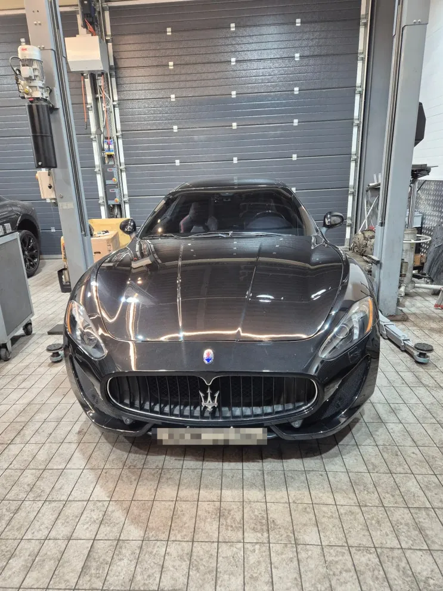
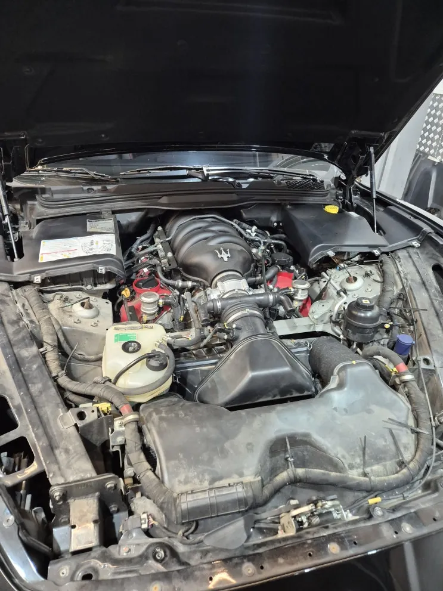
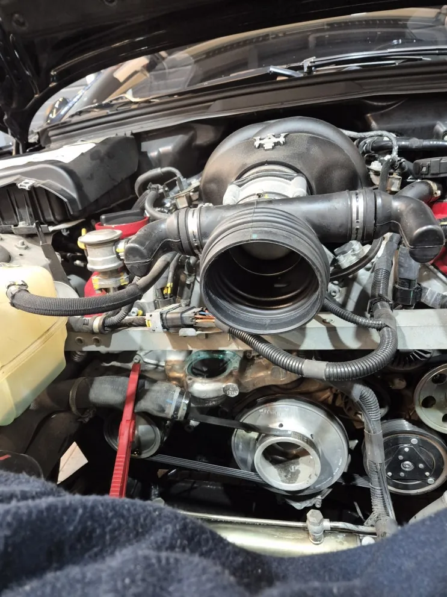
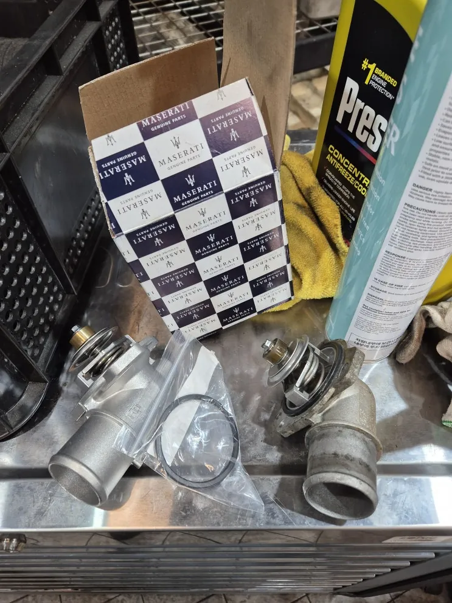
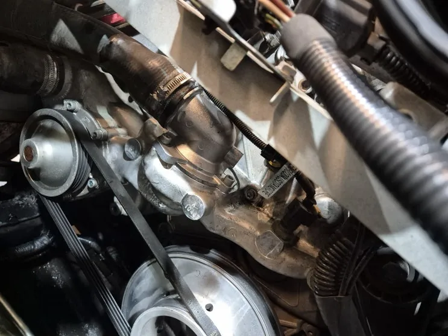
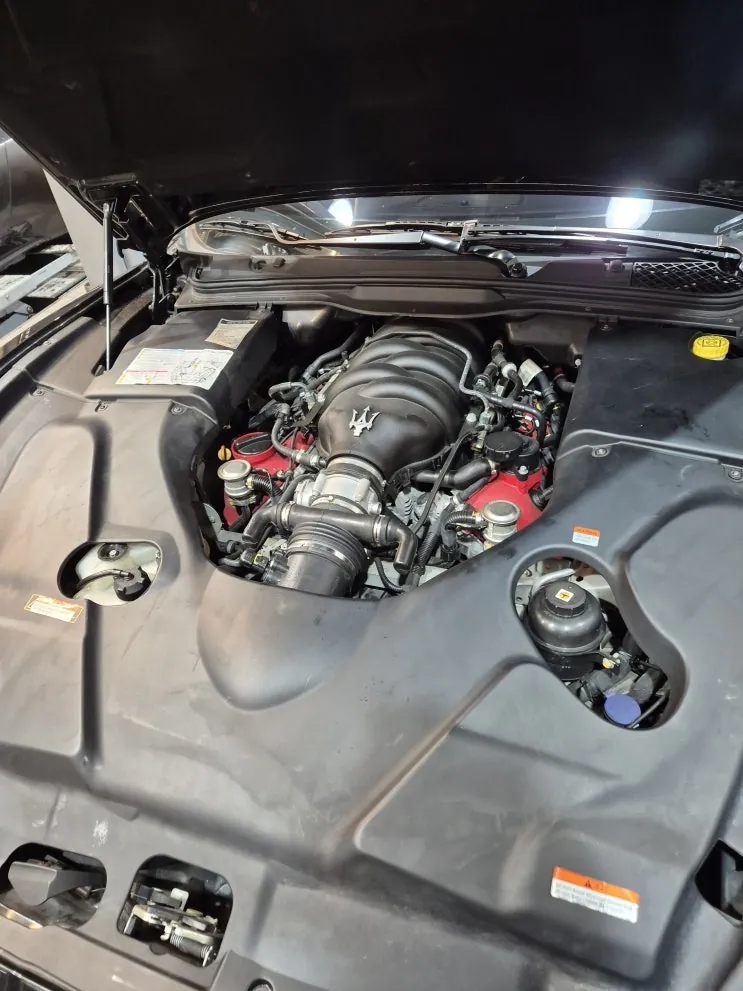
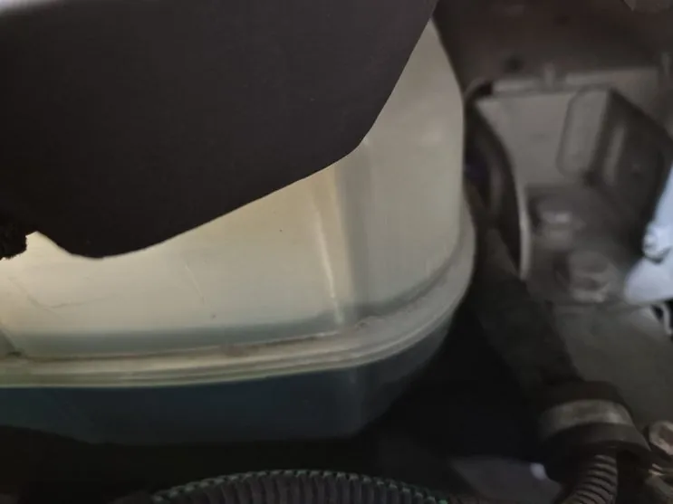

그란투리스모(M145) 냉각수 순환 불량 — 서모스탯 교체와 냉각수 교환
At a glance한눈에 보기
- 차량
- 마세라티 그란투리스모
- 증상
- 냉각수 순환 불량, 서모스탯 개폐 기능 저하
- 진단
- 그란투리스모(M145) V8 엔진의 서모스탯이 노후로 개폐 기능이 떨어져 냉각수 순환이 원활하지 않았습니다. 흡기 라인을 떼어 낸 뒤 서모스탯을 신품으로 교체하고, 냉각수 전체 교환과 냉각 라인 점검을 함께 진행했습니다.
- 작업
- 흡기 라인 탈거
- 서모스탯 교체
- 냉각수 전체 교환
- 냉각 라인 점검

입고와 점검 결과
예약 후 입고된 그란투리스모(M145)는 점검 결과 서모스탯 불량으로 냉각수가 제대로 돌지 않는 상태였습니다. 그래서 서모스탯 교체, 냉각수 전체 교환, 냉각 라인 점검을 한 번에 진행했습니다.
서모스탯은 냉각수가 엔진과 라디에이터 사이를 오가는 길을 열고 닫아 엔진 온도를 일정하게 유지하는 부품입니다. 제대로 열리지 않으면 과열과 출력 저하로, 심하면 엔진 손상으로 이어질 수 있습니다.


서모스탯 탈거
그란투리스모 V8 엔진은 서모스탯에 닿기 위해 흡기 라인과 주변 부품을 순서대로 떼어 내야 합니다. 흡기 구조가 복잡하고 부품끼리 간섭이 민감해, 탈거 순서를 지키지 않으면 주변 부품이 손상될 수 있습니다.
떼어 낸 서모스탯에는 오염과 기능 저하 흔적이 있었고, 노후로 밸브 개폐가 둔해져 있었습니다.

교체와 조립
서모스탯은 정품 신품으로 교체하고 규정 토크로 고정했습니다. 장착하면서 실링 상태와 주변 부품 정렬도 함께 확인했습니다.
조립은 분해의 역순으로 진행하고, 부품별 규정 토크를 지켰습니다. 조립 오차가 생기면 진동, 출력 저하, 냉각 효율 저하가 생길 수 있어 순서를 그대로 따릅니다.


냉각수 교환
서모스탯 교체와 함께 냉각수를 전체 교환했습니다. 냉각수는 오래 쓰면 냉각 성능이 떨어지고 슬러지 같은 이물질이 생길 수 있습니다. 새 서모스탯을 단 김에 냉각수도 새로 채워 냉각 계통 전체를 정리했습니다.
수온 게이지가 평소보다 높게 올라가거나 냉각수가 자주 줄어든다면 서모스탯과 냉각 계통 점검을 권합니다. 계기판 사진을 카톡으로 먼저 보내 주세요.

자주 묻는 질문
서모스탯이 고장 나면 어떤 문제가 생기나요?
냉각수 순환이 제대로 되지 않아 엔진 과열, 출력 저하가 생길 수 있고, 심하면 오버히트로 엔진이 손상될 수 있습니다.
이 작업의 원문 기록: 네이버 블로그에서 보기
Consultation
마세라티 그란투리스모, 비슷한 증상이 있나요?
증상 사진이나 경고등 화면을 카톡으로 먼저 보내 주시면 확인 후 안내해 드립니다. 전국 탁송 상담 가능.